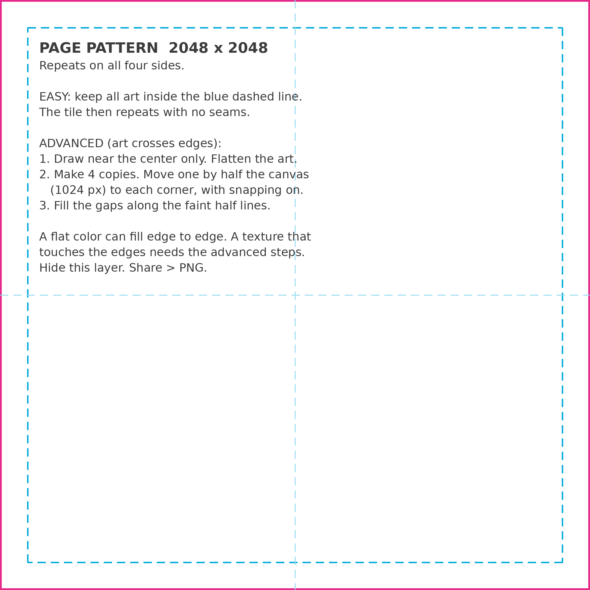
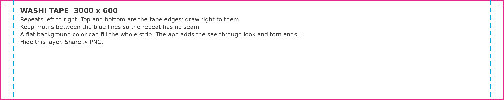
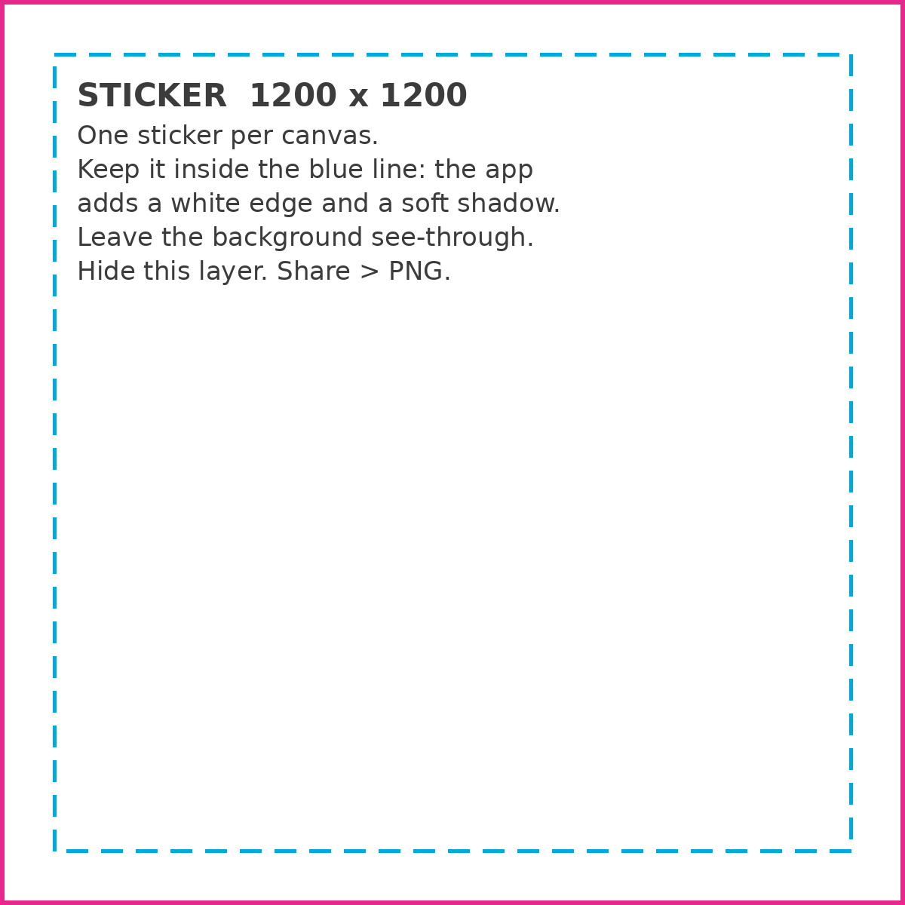

Layered files that open in Procreate. Each has a guide layer with the safe lines and short steps. Draw on the "ART" layer, hide the guides, export a PNG.

Page pattern · 2048 x 2048 px · repeats on all four sidesFor page backgrounds and paper sheets. Easy way: keep all art inside the blue line. Art that crosses the edges needs the 4-copy steps on the guide layer.
Download page pattern (.psd)
Washi tape · 3000 x 600 px · repeats left to rightDraw right to the top and bottom edges. Keep motifs between the blue lines. The app adds the see-through look and torn ends.
Download washi tape (.psd)
Sticker · 1200 x 1200 px · one sticker per canvasLeave the background see-through. Stay inside the blue line: the app adds a white edge and a soft shadow.
Download sticker (.psd)GUIDES layer. For stickers, also hide BASE if it is there.dice-red.png.A folder with your PNGs and one list file, pack.json. The list names each piece and its kind: sticker, stamp, tape or paper. Stamps are one solid color on see-through; the app inks them. Send me a folder of PNGs and I will write the list file.